Getting started
How does it work?
TECHNICAL SYSTEM DIAGRAM
Firmata is a “common language”: the Arduino understands standardized commands (“set pin 13 to 1”, “give me the value of A0”). There is no need to write an Arduino program: the Firmata sketch is uploaded once, and you interact with the board from your web page.
Make sure to use the Chrome browser. Firefox and Safari will not work.
How to use this repository
If you are a MITid student, follow the Minimal setup steps (Arduino + MITid students template) ONCE. After that, whenever you want to build a circuit, browse the Inputs and Outputs sections.
Minimal setup
Arduino
These steps only need to be completed once per Arduino board. You do not need to upload Firmata for every new circuit.
-
Open the Arduino IDE.
-
Make sure you have the firmata library installed.
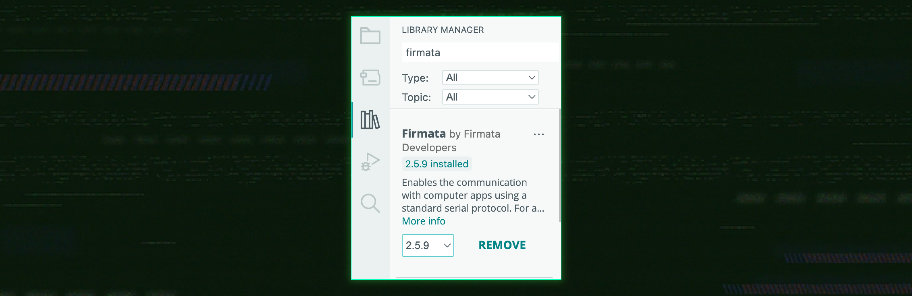
-
Open File → Examples → Firmata → StandardFirmataPlus
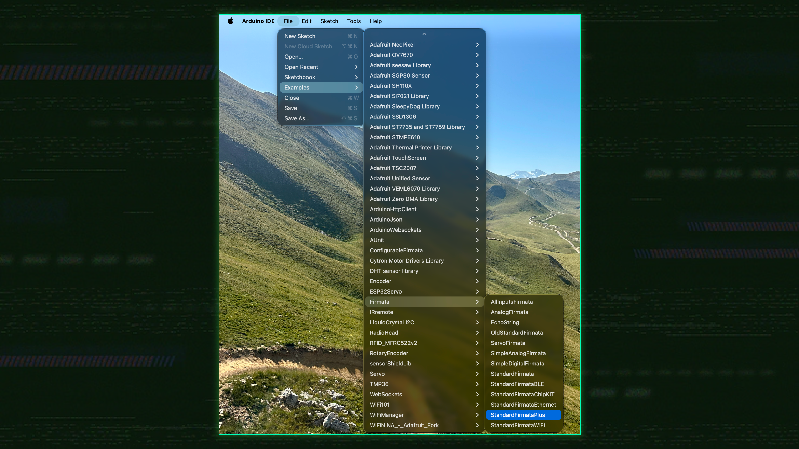
-
In the Arduino IDE, connect the board and select its Board and Port.
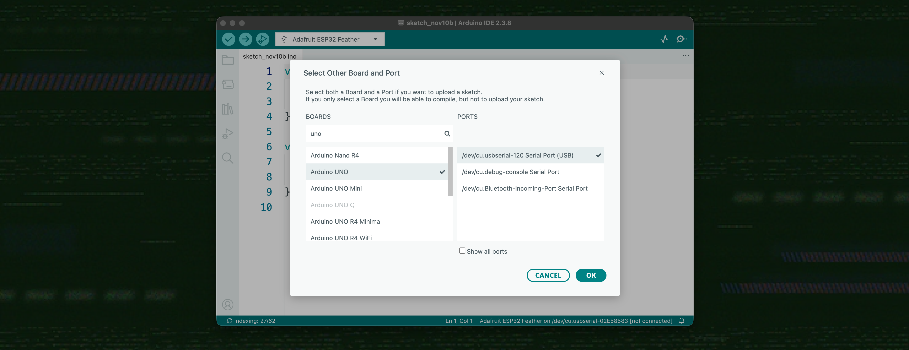
- Click Upload. That’s it: the board can now be controlled remotely.
- Make sure the IDE’s Serial Monitor is closed. Only one program at a time can use the port.
MITid student template
Now that the hardware is ready, go to the MITid medieval bootcamp template↗ repository to set up the web side. Keep this page open to refer to the electronic component documentation and learn how to use them in your projects.
Basic project template
You can use the HTML, CSS, and JavaScript template in the example file↗.
Add the following line in your html head to load the library
<head>
<!-- load the p5.j5 library -->
<script src="https://cdn.jsdelivr.net/gh/methio/p5.j5@latest/j5.js" defer></script>
</head>
For security reasons, the browser only opens a serial port after a user click: the user then selects the Arduino in a dialog. That’s why you need a button.
let board;
function setup() {
createCanvas(400, 300); // create a canvas
board = createBoard(); // create the "board"
createConnectButton(board); // create the "Connect Arduino" button
}
function draw() {
background(220);
}
Next, add components. In this example, we control an LED connected to GPIO 2.
let board;
let led; // a variable for our LED
function setup() {
createCanvas(400, 300);
board = createBoard();
createConnectButton(board);
led = new five.Led(2); // components can be created before connecting:
led.blink(500); // they will activate as soon as the board is ready
}
function draw() {
background(220);
}
Inputs
Button
Overview
A button provides a digital input that indicates when it is pressed, released, or held down.
Wiring
You can use any digital pins with the button.
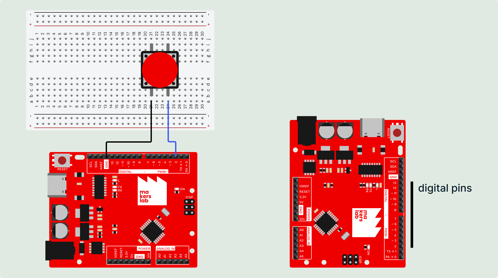
Code
Here is how to create a button in your p5.js sketch.
let button;
function setup(){
button = new five.Button({ pin: 2, isPullup: true });
}
To check whether the button is currently pressed, you can simply check the .isDown property:
function draw(){
if(button.isDown){
console.log("The button is currently pressed");
}
}
Alternatively, you can listen for the following events:
function setup(){
button = new five.Button({ pin: 2, isPullup: true });
// when button has just been pressed ↘️
button.on("press", function(){
console.log("The button has just been pressed")
});
// when button has just been released ↗️
button.on("release", function(){
console.log("The button has just been released")
});
// while button is down ↘️⏸️
button.on("hold", function(ms){
console.log(`hold for ${ms} milliseconds`);
});
}
Advanced use
- Options:
pin,isPullup(defaultfalse),invert,holdtime(500 ms) - Events:
"press"(or"down"),"release"(or"up"),"hold"(repeated while the button is held down); - Property :
isDown
Sensor
Overview
The Sensor component reads an analog or digital input and can report changes.
The Sensor class works with the following components: potentiometer, photoresistor, ball switch, and microphone.
It doesn't include IR receiver, DHT11, TMP36, ultrasonic sensor and RFID module.
Wiring
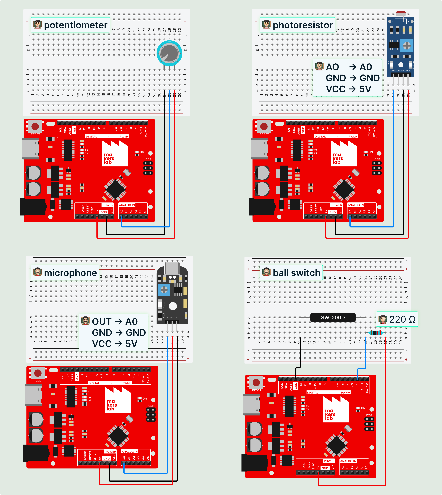
Code
The following code works with analog sensors, like the potentiometer, photoresistor and microphone.
let potentiometer; // a variable to store the sensor
let currentPotValue = 0; // a variable to store the sensor value
function setup(){
potentiometer = new five.Sensor("A0"); // potentiometer on analog pin A0
// every time the sensor value "changes" it triggers the following event
potentiometer.on("change", function(latestvalue){
/* The value that the sensor sends us exists only within
the function's scope. We need to “store” it in a globally
accessible variable. */
currentPotValue = latestvalue;
});
}
function draw(){
circle(width/2, height/2, currentPotValue); // use potentiometer value as
// circle diameter
}
The ballswitch is a digital sensor. It works bit differently. When creating the sensor object, we add a “type” parameter to specify that it is a digital sensor. The default value is “analog,” which is why we don't need to set it for the potentiometer, for example.
let ballswitch;
let ballswitchState = 0;
function setup(){
ballswitch = new five.Sensor({ pin: 2, type: "digital" }); // digital pin
ballswitch.on("change", function(value){
ballswitchState = value;
});
}
Advanced use
Each sensor reads values within a predefined range. For example, a potentiometer has a value range between 0 and 1023. However, you can add an additional parameter when creating the object so that it automatically calculates a cross-multiplication to provide values within a target range—for example, between 0 and 255 to obtain an RGB value.
potentiometer = new five.Sensor({
pin: "A0",
threshold: 5, // threshold for the "change" event.
scale: [0, 100] // new expected scale of value.
});
- Options:
pin,type("analog"or"digital"),threshold(minimum change required for"change"),scale - Properties:
raw(0-1023),value; - Events:
"data"(every reading),"change"
Joystick
Overview
The joystick reads two analog axes and provides x and y values. Each axis ranges from -1 to 1, with 0 representing the joystick's neutral position.
You can also read the button on the joystick. It works like a regular button.
Wiring
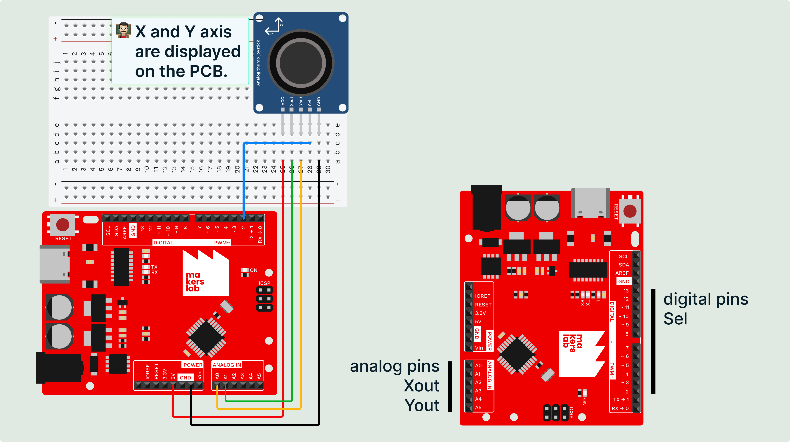
Code
let joystick;
let joystick-button;
function setup(){
joystick = new five.Joystick({ pins: ["A0", "A1"] }); // [ "X axis pin", "Y axis pin"]
joystick-button = new five.Button({ pin:2, isPullup: true });
}
function draw() {
background(240);
circle( width / 2 + joystick.x * 100, // we have acces to joystick.x property to get x value
height / 2 + joystick.y * 100, // same for y axis
30);
// 👨🏻🏫 x and y values are between -1 and 1.
// thats why I multiply axis value by 100
}
Advanced use
- Options:
pins([X, Y]),invertX,invertY,deadband(0.03),autoCalibrate(the first reading is the center: leave the stick at rest when connecting) - Properties:
x,y; - Methods:
calibrate(); - Events:
"data","change"
Outputs
Led
Overview
An LED can be controlled as an on/off output (digital) or with variable brightness (PWM).
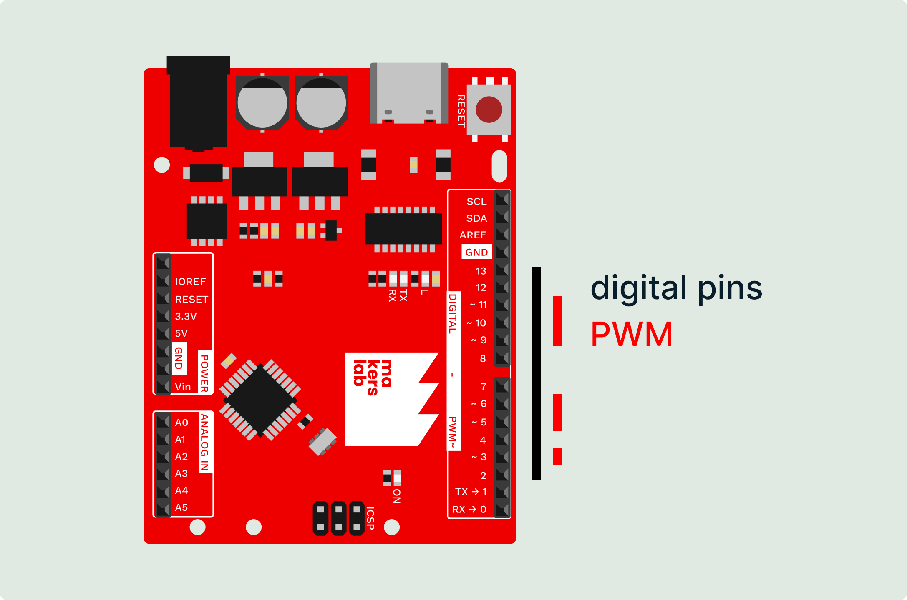
Digital
If your LED only needs to turn on and off, you can use any digital pin from 2 to 13.
PWM
If you need to change your LED's brightness, use a pin marked with a tilde (~) to use PWM.
Wiring
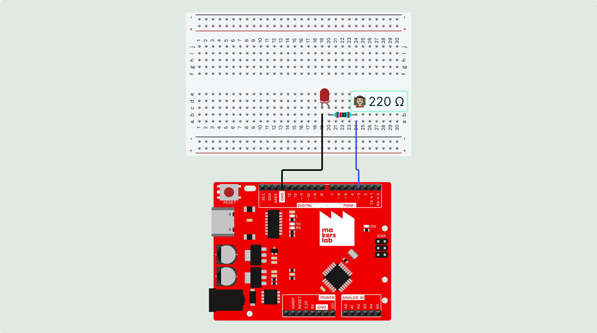
Code
let led;
function setup(){
led = new five.Led(3);
led.on(); // switch on the led
led.brightness(80); // require PWM → set a brightness value between 0 and 255
led.off(); // switch off the led
}
Advanced use
- Options:
pin,isAnode - Methods:
on(),off(),toggle(),brightness(0-255),blink(ms),pulse(ms),stop(); - Property:
isOn
Led.RGB
Overview
An RGB LED combines red, green, and blue channels that can be adjusted to produce different colors.
Wiring
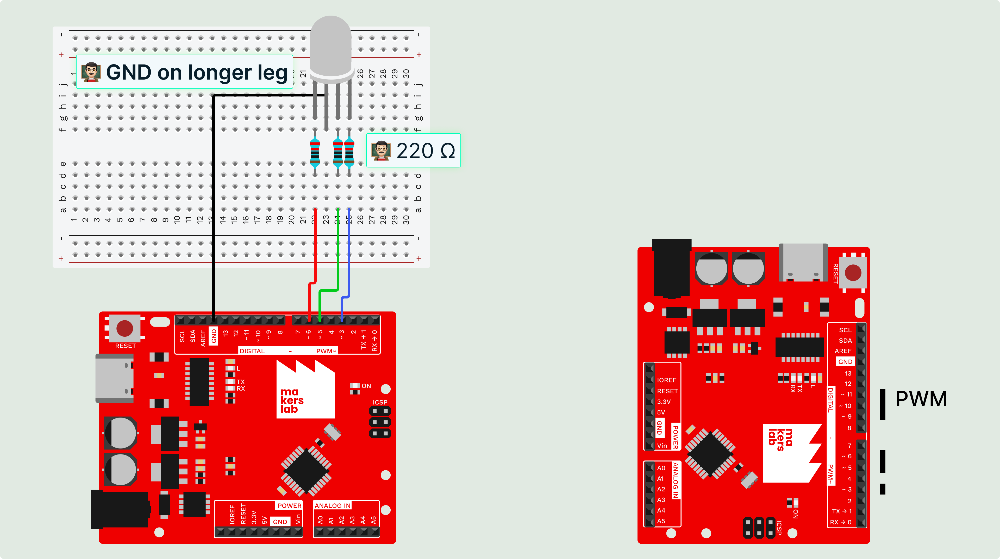
Code
let rgb;
function setup(){
rgb = new five.Led.RGB([3, 5, 6]); // [red, green, blue] pins
rgb.color("#ff8800"); // hexadecimal or [r, g, b]
rgb.intensity(50); // 0 to 100 %
rgb.off(); // self explenatory
}
Advanced use
- Options:
pins([R, G, B]),isAnode - Methods:
color(),on(),off(),intensity(0-100),strobe(ms),stop()
Servo
Overview
A servo lets you position its shaft at a specific angle.
Wiring
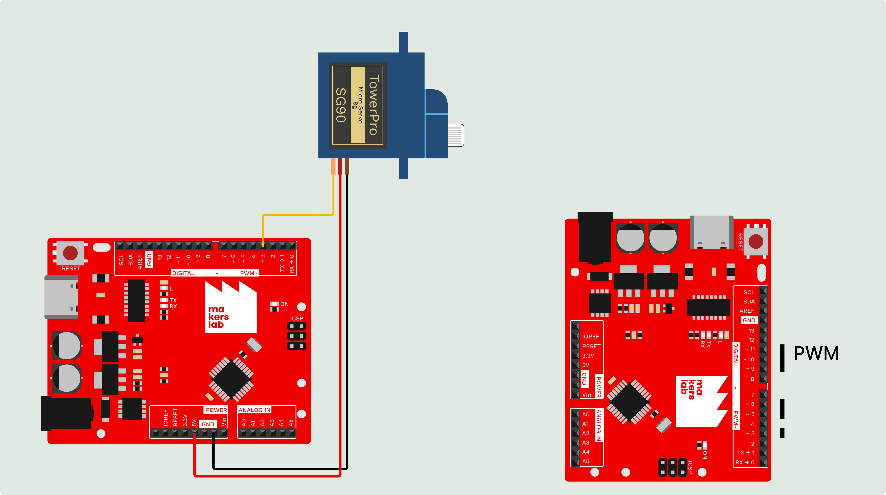
Code
let servo;
function setup(){
servo = new five.Servo(3);
servo.to(90); // go to custom angle in degree
servo.to(180, 1000); // go to 180° in 1 second (1000ms)
servo.min(); // angle to min (0°)
servo.max(); // angle to max (180°)
servo.center(); // angle to center (90°)
}
Advanced use
- Options :
pin,range([0, 180]),pwmRange([544, 2400]),startAt,invert - Methods:
to(angle[, ms]),min(),max(),center(),home(),stop(); - Properties :
value
[WIP] Motor
Overview
The Motor component controls the speed and direction of a motor compatible with a PWM + direction driver.
Wiring
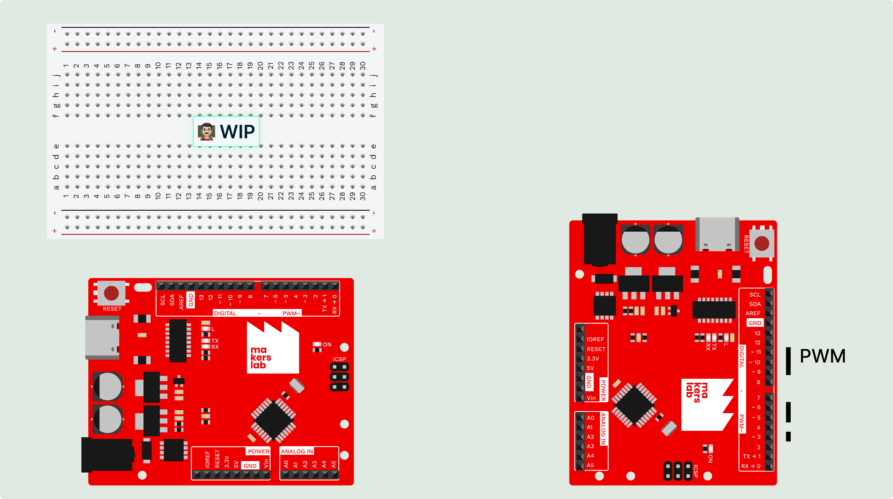
Motor driver with PWM + direction inputs: PWM→pin 5, DIR→pin 4, separate motor power supply. An L298N or L293D requires two opposing direction inputs, which this two-pin setup does not provide.
Code
const motor = new five.Motor([5, 4]); // [pwm, dir]
motor.forward(200); // speed from 0 to 255
motor.reverse(120);
motor.stop();Advanced use
- Options:
pins([pwm, dir]),invertDirection - Methods:
forward(v),reverse(v),stop(),start(v),speed(v)(default speed: 128)
Piezo
Overview
A passive piezo buzzer can produce tones and play a melody.
Wiring
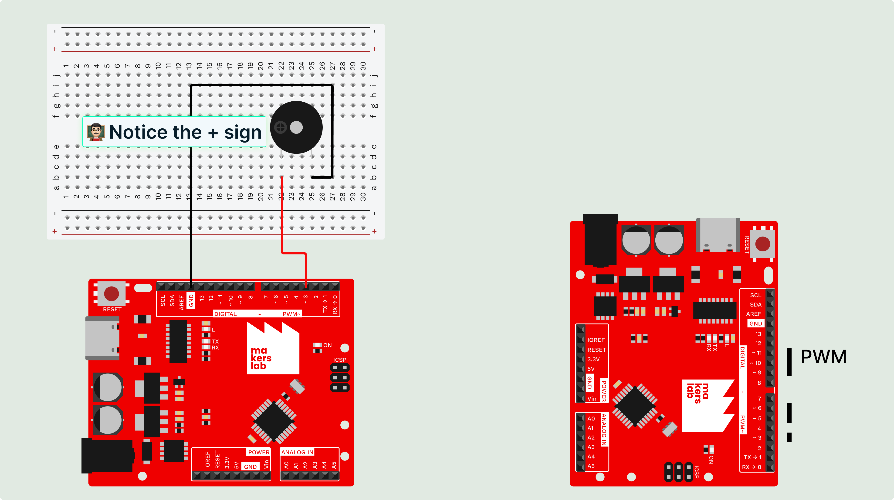
Code
let piezo;
function setup(){
piezo = new five.Piezo(3);
piezo.tone(440, 300); // play 440 Hz for 300 ms
// you can play frequencies between 100 and 900Hz
piezo.noTone(); // stop playings
}
Advanced use
- Methods:
tone(fréquence|note, ms),noTone(),play({ song, tempo, beats })(returns a Promise)
LCD (I2C)
Overview
An I2C LCD displays text and lets you position the cursor.
Wiring
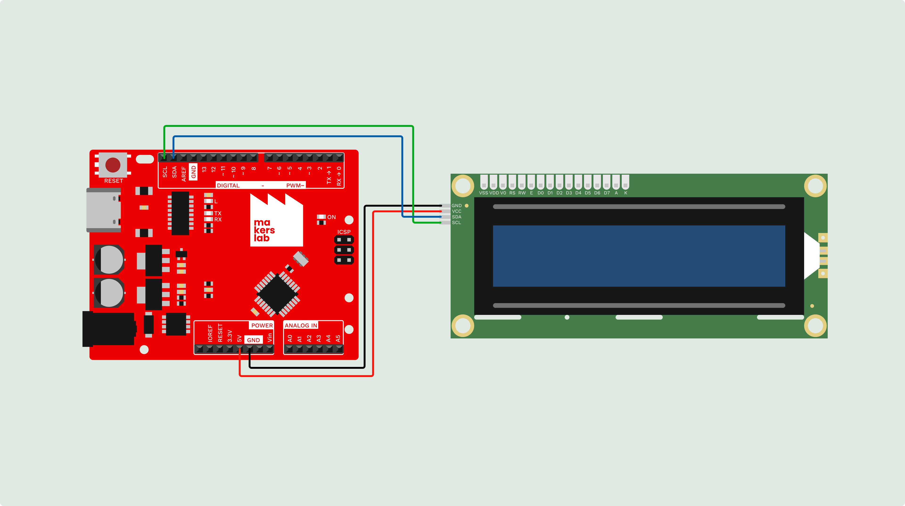
Code
let lcd;
function setup(){
lcd = new five.LCD({ controller: "PCF8574" });
lcd.clear(); // remove what is displayed
lcd.cursor(0, 0); // move the cursor (row, column)
lcd.print("hello world!"); // and print on the lcd screen
lcd.cursor(1, 0).print("Yo le rap"); // shortened
}
Advanced use
- Options:
controller("PCF8574"or"PCF8574A"),address,rows(2),cols(16) - Methods:
print(),clear(),cursor(row, col),home(),on(),off(),backlight(),noBacklight()(chainable, queued calls)